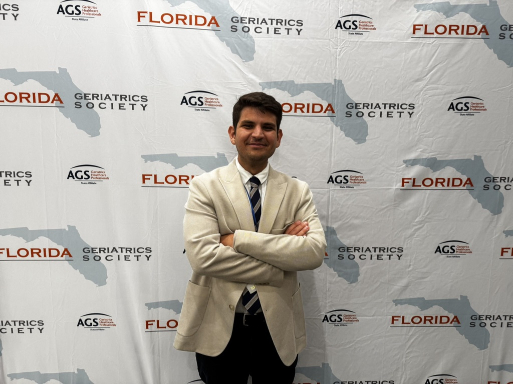
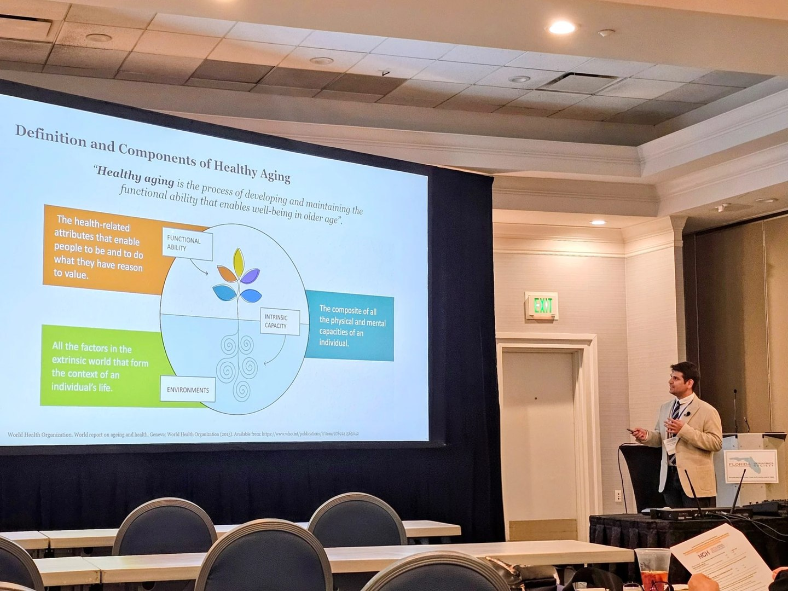
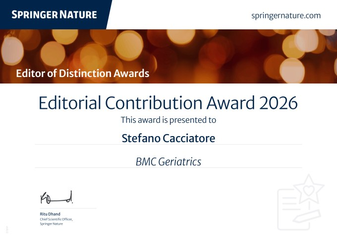
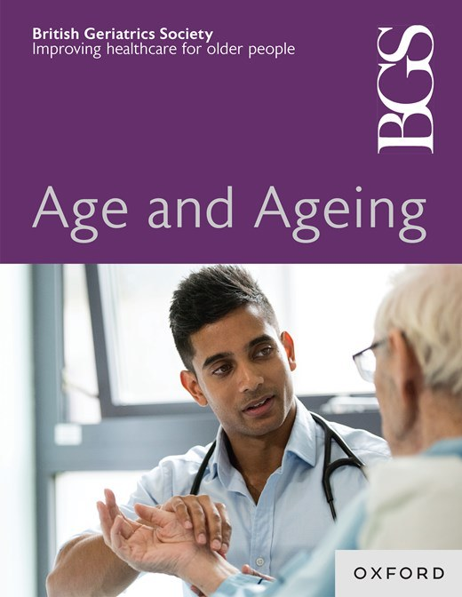
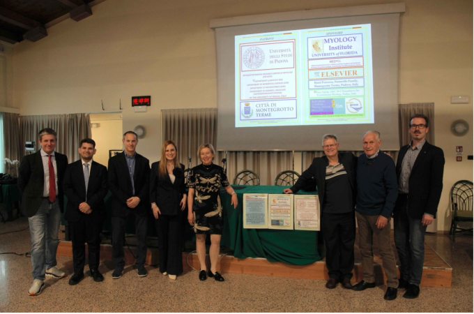
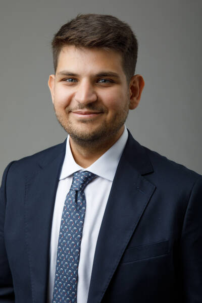
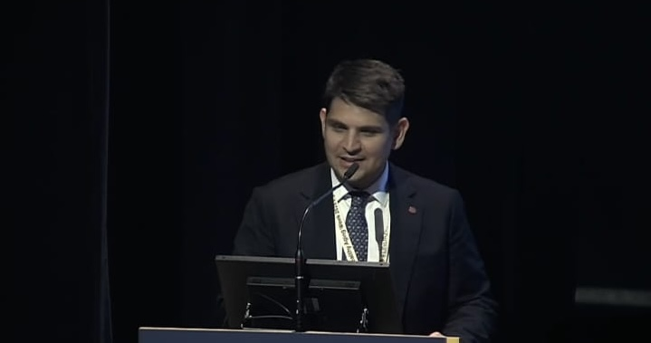
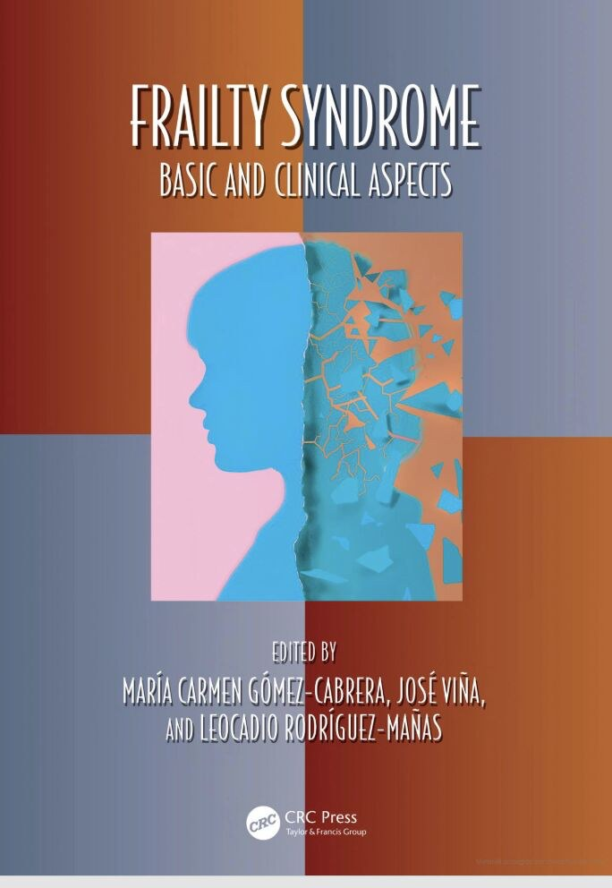
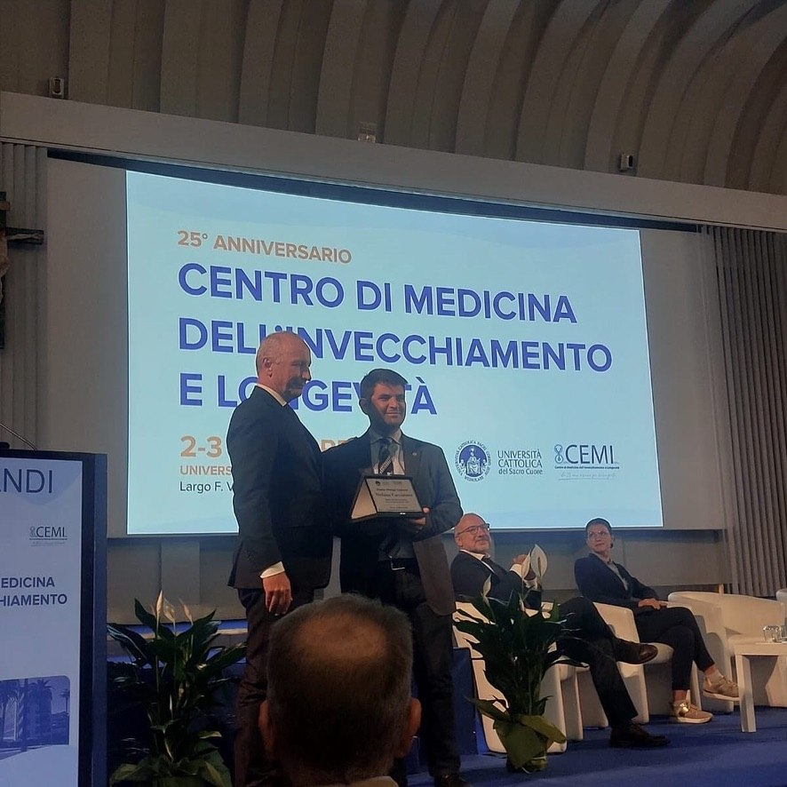

Two Travel Awards for the 2026 GSA Annual Scientific Meeting
Two travel awards will support participation in the meeting in National Harbor.
Read more →
Two travel awards will support participation in the meeting in National Harbor.
Read more →The journal increased its Journal Impact Factor from 3.8 to 4.5 and remains Q1 in Gerontology.
Read more →
A presentation at the 37th Annual FGS Symposium examined how intrinsic capacity and frailty can support complementary approaches to healthy aging and geriatric care.
Read more →
Springer Nature recognized Dr. Cacciatore’s editorial service to BMC Geriatrics for the second consecutive year.
Read more →
The editorial argues that intrinsic capacity and frailty address different stages of the aging process and should be integrated rather than treated as competing frameworks.
Read more →
Dr. Cacciatore presented work on sensory function, mobility, cognition, and intrinsic capacity at the international meeting in Padua, Italy.
Read more →
The Institute welcomed Dr. Cacciatore as a visiting researcher supported by the Ermenegildo Zegna Founder’s Scholarship.
Read more →
The award recognized research linking better cardiovascular health with a lower likelihood of walking difficulty in middle-aged and older adults.
Read more →
The new academic volume brings together contemporary perspectives on frailty, from intrinsic capacity and biomarkers to exercise, nutrition, resilience, and clinical management.
Read more →
The award was presented during the 25th anniversary meeting of the Center for Aging and Longevity Medicine at Università Cattolica del Sacro Cuore.
Read more →
A study on Mediterranean diet adherence and probable sarcopenia in older adults was recognized with the journal’s Best Paper Award.
Read more →The scholarship supports an international research fellowship at the University of Florida Institute on Aging focused on healthy aging and intrinsic capacity.
Read more →